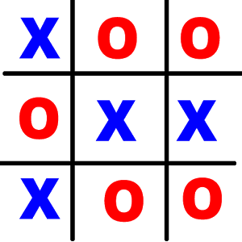

| Pagina Principal | Projetos | Sobre Mim |
Nome: Jogo da Velha
Curso: Todas as Engenharias
Período: Primeiro
Design: Sim
Escrita: Não
Descrição: No projeto Jogo da velha da disciplina de Design de Software, foi proposto a construção de um projeto no qual tinha a função de simular um jogo da velha, sendo programado em Python. O projeto consiste no treinamento de ferramentais de linguagem de programação para conseguir finaliza-lo, deste modo necessita de um treinamento do algoritmo em si